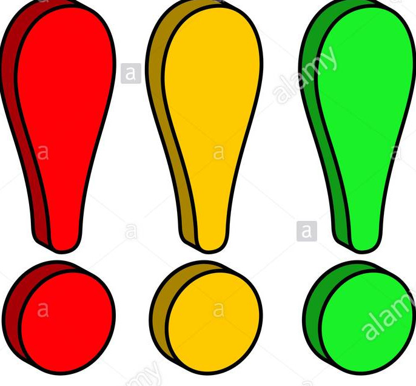

WELCOME TO THE HOME OF TRINBARJAM
 CONGRATULATION TO THE PEOPLES
CONGRATULATION TO THE PEOPLES
DEMOCRATIC REVOLUTION PARTY 
We at the Trinbarjam commission would like to congratulate all political parties and candidates for the way in which they carried out their campaign, in a respectful and peaceful manner.After a month of campaigning, it ends with the People Democratic Party on top witha an atonishing 12,744 votes! History first.This is the first the Peoples Democratic Party Won a general electiona and Congratualation goes out to them as they celebrate their victory.